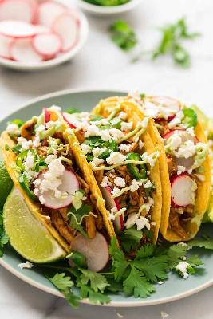

Shredded Chicken Tacos
This chicken tacos recipe is easy to make in a slow cooker. Spoon the filling into warm tortillas for a very tasty meal.

Ingredients
- 1 cup chicken broth
- 3 tablespoons taco seasoning mix
- 1 pound skinless, boneless chicken breasts
Directions
- Combine chicken broth and taco seasoning mix in a bowl.
- Place chicken in a slow cooker. Pour chicken broth mixture over chicken.
- Cook on Low for 6 to 8 hours. Shred chicken.